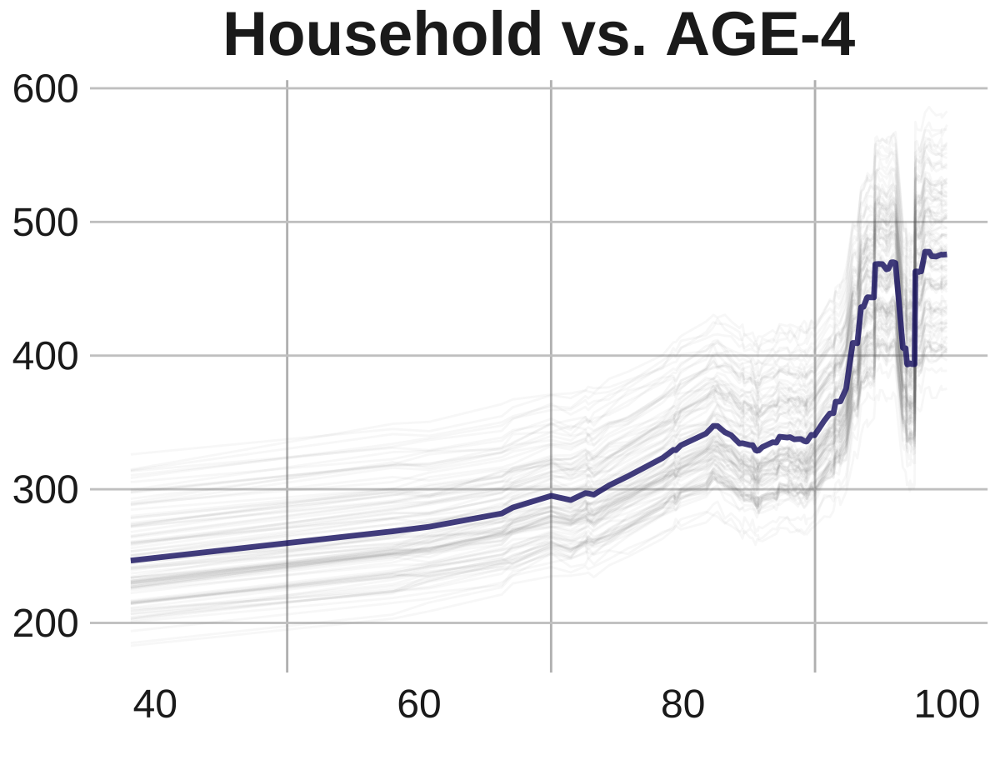
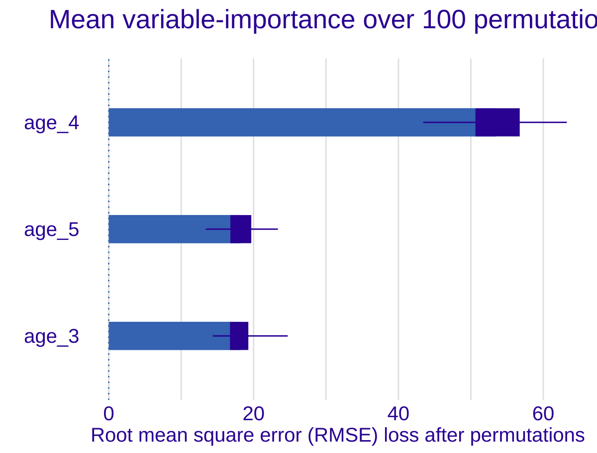

Chapter 3 Example 1
## ── Attaching packages ────────────────────────────────────── tidymodels 1.1.1 ──## ✔ broom 1.0.5 ✔ recipes 1.0.8
## ✔ dials 1.2.0 ✔ rsample 1.2.0
## ✔ dplyr 1.1.2 ✔ tibble 3.2.1
## ✔ ggplot2 3.5.0 ✔ tidyr 1.3.0
## ✔ infer 1.0.4 ✔ tune 1.1.2
## ✔ modeldata 1.2.0 ✔ workflows 1.1.3
## ✔ parsnip 1.1.1 ✔ workflowsets 1.0.1
## ✔ purrr 1.0.2 ✔ yardstick 1.2.0## ── Conflicts ───────────────────────────────────────── tidymodels_conflicts() ──
## ✖ purrr::discard() masks scales::discard()
## ✖ dplyr::filter() masks stats::filter()
## ✖ dplyr::lag() masks stats::lag()
## ✖ recipes::step() masks stats::step()
## • Search for functions across packages at https://www.tidymodels.org/find/# install.packages("countrycode")
# install.packages("DALEXtra")
# install.packages("devtools")
# devtools::install_github('bbc/bbplot')
library(tidyverse)## ── Attaching core tidyverse packages ──────────────────────── tidyverse 2.0.0 ──
## ✔ forcats 1.0.0 ✔ readr 2.1.4
## ✔ lubridate 1.9.2 ✔ stringr 1.5.0
## ── Conflicts ────────────────────────────────────────── tidyverse_conflicts() ──
## ✖ readr::col_factor() masks scales::col_factor()
## ✖ purrr::discard() masks scales::discard()
## ✖ dplyr::filter() masks stats::filter()
## ✖ stringr::fixed() masks recipes::fixed()
## ✖ dplyr::lag() masks stats::lag()
## ✖ readr::spec() masks yardstick::spec()
## ℹ Use the conflicted package (<http://conflicted.r-lib.org/>) to force all conflicts to become errors##
## Attaching package: 'plotly'
##
## The following object is masked from 'package:ggplot2':
##
## last_plot
##
## The following object is masked from 'package:stats':
##
## filter
##
## The following object is masked from 'package:graphics':
##
## layout## Loading required package: showtextdb##
## Attaching package: 'janitor'
##
## The following objects are masked from 'package:stats':
##
## chisq.test, fisher.test## Loading required package: DALEX
## Welcome to DALEX (version: 2.4.3).
## Find examples and detailed introduction at: http://ema.drwhy.ai/
##
##
## Attaching package: 'DALEX'
##
## The following object is masked from 'package:dplyr':
##
## explainlibrary(bbplot)
#Loading the datasets
df_childhood <- read_csv("https://raw.githubusercontent.com/mesdi/blog/main/childhood.csv")## Rows: 1218 Columns: 4
## ── Column specification ────────────────────────────────────────────────────────
## Delimiter: ","
## chr (2): country, age
## dbl (2): time, childhood
##
## ℹ Use `spec()` to retrieve the full column specification for this data.
## ℹ Specify the column types or set `show_col_types = FALSE` to quiet this message.## Rows: 749 Columns: 3
## ── Column specification ────────────────────────────────────────────────────────
## Delimiter: ","
## chr (1): country
## dbl (2): time, household
##
## ℹ Use `spec()` to retrieve the full column specification for this data.
## ℹ Specify the column types or set `show_col_types = FALSE` to quiet this message.#Joining them by country and time
df <-
df_childhood %>%
left_join(df_household, by = c("country", "time")) %>%
na.omit()
#Wrangling the dataset
df_tidy <-
df %>%
mutate(household = round(household, 2),
childhood = round(childhood, 2),
age = str_replace(age, "_", "-"),
country_name = countrycode(country, "genc3c", "country.name")
)
#Best 20 countries based on the household net worth in their last year
df_tidy %>%
group_by(country) %>%
slice_max(time) %>%
slice_max(household, n=20) %>%
mutate(age = fct_reorder(age, childhood, .desc = TRUE),
country_name = fct_reorder(country_name, household, .desc = TRUE)) %>%
ggplot(aes(x=country_name,
y=childhood,
fill = age,
#Hover text of the barplot
text = glue("{country}\n%{childhood}\n{age}\nChildhood education"))) +
geom_col() +
geom_line(aes(y=household/2, group = 1),
color= "skyblue",
size=1) +
#Adding the household net worth as a second(dual) y-axis
scale_y_continuous(sec.axis = sec_axis(~.*2)) +
scale_fill_viridis_d(name = "") +
xlab("") +
ylab("") +
theme_minimal() +
theme(
axis.text.x = element_text(angle = 60),
axis.text.y = element_blank(),
axis.text.y.right = element_blank(),
panel.grid = element_blank(),
legend.position = "none"
) -> p## Warning: Using `size` aesthetic for lines was deprecated in ggplot2 3.4.0.
## ℹ Please use `linewidth` instead.
## This warning is displayed once every 8 hours.
## Call `lifecycle::last_lifecycle_warnings()` to see where this warning was
## generated.#adding google font
font_add_google(name = "Henny Penny", family = "henny")
showtext_auto()
#setting font family for ggplotly
font <- list(
family= "Henny Penny",
size =5
)
#Plotly chart
ggplotly(p, tooltip = c("text")) %>%
#Hover text of the line
style(text = glue("{unique(p$data$country)}\n%{unique(p$data$household)}\nHousehold net worth"),traces = 6) %>%
layout(font=font)## # A tibble: 6 × 6
## country age time childhood household country_name
## <chr> <chr> <dbl> <dbl> <dbl> <chr>
## 1 AUS AGE-3 2010 71.8 347. Australia
## 2 AUS AGE-3 2013 62.3 366. Australia
## 3 AUS AGE-3 2014 69.4 383. Australia
## 4 AUS AGE-3 2015 68.4 402. Australia
## 5 AUS AGE-3 2016 63.3 428. Australia
## 6 AUS AGE-3 2017 66.0 439. Australia#Splitting the data into train and test sets
set.seed(1234)
df_split <-
df_tidy %>%
#Converting the levels to variables for modeling
pivot_wider(names_from = age, values_from = childhood) %>%
clean_names() %>%
na.omit() %>%
initial_split()
df_train <- training(df_split)
df_test <- testing(df_split)## # A tibble: 216 × 7
## country time household country_name age_3 age_4 age_5
## <chr> <dbl> <dbl> <chr> <dbl> <dbl> <dbl>
## 1 SVN 2015 324. Slovenia 82.8 89.3 91.8
## 2 ITA 2014 575. Italy 92.0 96.0 97.0
## 3 JPN 2012 571. Japan 78 93.8 94.6
## 4 LUX 2011 391. Luxembourg 72.0 94.6 96.7
## 5 ITA 2011 500. Italy 94.4 98.7 99.6
## 6 ITA 2016 578. Italy 92.4 95.9 96.4
## 7 ESP 2017 392. Spain 96.4 97.7 97.1
## 8 GRC 2019 362. Greece 34.9 76.0 95.2
## 9 DEU 2015 469. Germany 93.3 96.7 98.1
## 10 LTU 2012 203. Lithuania 71.4 75 77.0
## # ℹ 206 more rows##
## Attaching package: 'dbarts'## The following object is masked from 'package:tidyr':
##
## extract## The following object is masked from 'package:parsnip':
##
## bart#Preprocessing
df_rec <- recipe(household ~ age_3 + age_4 + age_5, data = df_train)
#Modeling with BART
df_spec <-
parsnip::bart() %>%
set_engine("dbarts") %>%
set_mode("regression")
#Workflow
df_wf <-
workflow() %>%
add_recipe(df_rec) %>%
add_model(df_spec)
#cross-validation for resamples
set.seed(12345)
df_folds <- vfold_cv(df_train)
#Resampling for the accuracy metrics
set.seed(98765)
df_rs <-
df_wf %>%
fit_resamples(resamples = df_folds)
#Computes the accuracy metrics
collect_metrics(df_rs)## # A tibble: 2 × 6
## .metric .estimator mean n std_err .config
## <chr> <chr> <dbl> <int> <dbl> <chr>
## 1 rmse standard 85.2 10 4.79 Preprocessor1_Model1
## 2 rsq standard 0.528 10 0.0458 Preprocessor1_Model1# A tibble: 2 x 6
# .metric .estimator mean n std_err .config
# <chr> <chr> <dbl> <int> <dbl> <chr>
#1 rmse standard 85.2 10 4.79 Preprocessor1_Model1
#2 rsq standard 0.528 10 0.0458 Preprocessor1_Model1#Model tuning with grid search
df_spec <-
parsnip::bart(
trees = tune(),
prior_terminal_node_coef = tune(),
prior_terminal_node_expo = tune()
) %>%
set_engine("dbarts") %>%
set_mode("regression")
#parameter object
rf_param <-
workflow() %>%
add_model(df_spec) %>%
add_recipe(df_rec) %>%
extract_parameter_set_dials() %>%
finalize(df_train)
#space-filling design with integer grid argument
df_reg_tune <-
workflow() %>%
add_recipe(df_rec) %>%
add_model(df_spec) %>%
tune_grid(
df_folds,
grid = 20,
param_info = rf_param,
metrics = metric_set(rsq)
)
#Selecting the best parameters according to the r-square
rf_param_best <-
select_best(df_reg_tune, metric = "rsq") %>%
select(-.config)
#Final estimation with the object of best parameters
final_df_wflow <-
workflow() %>%
add_model(df_spec) %>%
add_recipe(df_rec) %>%
finalize_workflow(rf_param_best)
set.seed(12345)
final_df_fit <-
final_df_wflow %>%
last_fit(df_split)
#Computes final the accuracy metrics
collect_metrics(final_df_fit)## # A tibble: 2 × 4
## .metric .estimator .estimate .config
## <chr> <chr> <dbl> <chr>
## 1 rmse standard 88.6 Preprocessor1_Model1
## 2 rsq standard 0.616 Preprocessor1_Model1# A tibble: 2 x 4
# .metric .estimator .estimate .config
# <chr> <chr> <dbl> <chr>
#1 rmse standard 84.5 Preprocessor1_Model1
#2 rsq standard 0.645 Preprocessor1_Model1#Creating a preprocessed dataframe of the train dataset
imp_data <-
df_rec %>%
prep() %>%
bake(new_data = NULL)
#Final modeling with the best parameters
df_spec_final <-
parsnip::bart(
trees = 80,
prior_terminal_node_coef = 0.884,
prior_terminal_node_expo = 0.713
) %>%
set_engine("dbarts") %>%
set_mode("regression")
#building the explainer-object
explainer_df <-
explain_tidymodels(
df_spec_final %>%
fit(household ~ ., data = imp_data),
data = imp_data %>% select(-household),
y = df_train$household,
verbose = FALSE
)
set.seed(1983)
#calculates the variable-importance measure
vip_df <-
model_parts(
explainer = explainer_df,
loss_function = loss_root_mean_square,
B = 100, #the number of permutations
type = "difference",
label =""
)
#Plotting ranking of the importance of explanatory variables
plot(vip_df) +
ggtitle("Mean variable-importance over 100 permutations", "")+
theme(plot.title = element_text(hjust = 0.5, size = 20),
axis.title.x = element_text(size=15),
axis.text = element_text(size=15))
#Partial dependence profiles for 4-years old students
set.seed(2403)
pdp_age <- model_profile(explainer_df, variables = "age_4")
as_tibble(pdp_age$agr_profiles) %>%
ggplot(aes(`_x_`, `_yhat_`)) +
geom_line(data = as_tibble(pdp_age$cp_profiles),
aes(x = age_4, group = `_ids_`),
size = 0.5, alpha = 0.05, color = "gray50")+
geom_line(color = "midnightblue", size = 1.2, alpha = 0.8)+
bbc_style()+
labs(title= "Household vs. AGE-4")+
theme(plot.title = element_text(hjust = 0.5),
panel.grid.minor.x = element_line(color="grey"))## Warning in grid.Call(C_stringMetric, as.graphicsAnnot(x$label)): font family
## 'Helvetica' not found, will use 'sans' instead
## Warning in grid.Call(C_stringMetric, as.graphicsAnnot(x$label)): font family
## 'Helvetica' not found, will use 'sans' instead
## Warning in grid.Call(C_stringMetric, as.graphicsAnnot(x$label)): font family
## 'Helvetica' not found, will use 'sans' instead
## Warning in grid.Call(C_stringMetric, as.graphicsAnnot(x$label)): font family
## 'Helvetica' not found, will use 'sans' instead
## Warning in grid.Call(C_stringMetric, as.graphicsAnnot(x$label)): font family
## 'Helvetica' not found, will use 'sans' instead
## Warning in grid.Call(C_stringMetric, as.graphicsAnnot(x$label)): font family
## 'Helvetica' not found, will use 'sans' instead
## Warning in grid.Call(C_stringMetric, as.graphicsAnnot(x$label)): font family
## 'Helvetica' not found, will use 'sans' instead
## Warning in grid.Call(C_stringMetric, as.graphicsAnnot(x$label)): font family
## 'Helvetica' not found, will use 'sans' instead
## Warning in grid.Call(C_stringMetric, as.graphicsAnnot(x$label)): font family
## 'Helvetica' not found, will use 'sans' instead
## Warning in grid.Call(C_stringMetric, as.graphicsAnnot(x$label)): font family
## 'Helvetica' not found, will use 'sans' instead
## Warning in grid.Call(C_stringMetric, as.graphicsAnnot(x$label)): font family
## 'Helvetica' not found, will use 'sans' instead
## Warning in grid.Call(C_stringMetric, as.graphicsAnnot(x$label)): font family
## 'Helvetica' not found, will use 'sans' instead
## Warning in grid.Call(C_stringMetric, as.graphicsAnnot(x$label)): font family
## 'Helvetica' not found, will use 'sans' instead
## Warning in grid.Call(C_stringMetric, as.graphicsAnnot(x$label)): font family
## 'Helvetica' not found, will use 'sans' instead## Warning in grid.Call(C_textBounds, as.graphicsAnnot(x$label), x$x, x$y, : font
## family 'Helvetica' not found, will use 'sans' instead
## Warning in grid.Call(C_textBounds, as.graphicsAnnot(x$label), x$x, x$y, : font
## family 'Helvetica' not found, will use 'sans' instead
## Warning in grid.Call(C_textBounds, as.graphicsAnnot(x$label), x$x, x$y, : font
## family 'Helvetica' not found, will use 'sans' instead
## Warning in grid.Call(C_textBounds, as.graphicsAnnot(x$label), x$x, x$y, : font
## family 'Helvetica' not found, will use 'sans' instead
## Warning in grid.Call(C_textBounds, as.graphicsAnnot(x$label), x$x, x$y, : font
## family 'Helvetica' not found, will use 'sans' instead
## Warning in grid.Call(C_textBounds, as.graphicsAnnot(x$label), x$x, x$y, : font
## family 'Helvetica' not found, will use 'sans' instead
## Warning in grid.Call(C_textBounds, as.graphicsAnnot(x$label), x$x, x$y, : font
## family 'Helvetica' not found, will use 'sans' instead
## Warning in grid.Call(C_textBounds, as.graphicsAnnot(x$label), x$x, x$y, : font
## family 'Helvetica' not found, will use 'sans' instead
## Warning in grid.Call(C_textBounds, as.graphicsAnnot(x$label), x$x, x$y, : font
## family 'Helvetica' not found, will use 'sans' instead## Warning in grid.Call(C_stringMetric, as.graphicsAnnot(x$label)): font family
## 'Helvetica' not found, will use 'sans' instead
## Warning in grid.Call(C_stringMetric, as.graphicsAnnot(x$label)): font family
## 'Helvetica' not found, will use 'sans' instead
## Warning in grid.Call(C_stringMetric, as.graphicsAnnot(x$label)): font family
## 'Helvetica' not found, will use 'sans' instead
## Warning in grid.Call(C_stringMetric, as.graphicsAnnot(x$label)): font family
## 'Helvetica' not found, will use 'sans' instead
## Warning in grid.Call(C_stringMetric, as.graphicsAnnot(x$label)): font family
## 'Helvetica' not found, will use 'sans' instead
## Warning in grid.Call(C_stringMetric, as.graphicsAnnot(x$label)): font family
## 'Helvetica' not found, will use 'sans' instead
## Warning in grid.Call(C_stringMetric, as.graphicsAnnot(x$label)): font family
## 'Helvetica' not found, will use 'sans' instead
## Warning in grid.Call(C_stringMetric, as.graphicsAnnot(x$label)): font family
## 'Helvetica' not found, will use 'sans' instead
## Warning in grid.Call(C_stringMetric, as.graphicsAnnot(x$label)): font family
## 'Helvetica' not found, will use 'sans' instead
## Warning in grid.Call(C_stringMetric, as.graphicsAnnot(x$label)): font family
## 'Helvetica' not found, will use 'sans' instead
## Warning in grid.Call(C_stringMetric, as.graphicsAnnot(x$label)): font family
## 'Helvetica' not found, will use 'sans' instead
## Warning in grid.Call(C_stringMetric, as.graphicsAnnot(x$label)): font family
## 'Helvetica' not found, will use 'sans' instead
## Warning in grid.Call(C_stringMetric, as.graphicsAnnot(x$label)): font family
## 'Helvetica' not found, will use 'sans' instead
## Warning in grid.Call(C_stringMetric, as.graphicsAnnot(x$label)): font family
## 'Helvetica' not found, will use 'sans' instead## Warning in grid.Call(C_textBounds, as.graphicsAnnot(x$label), x$x, x$y, : font
## family 'Helvetica' not found, will use 'sans' instead
## Warning in grid.Call(C_textBounds, as.graphicsAnnot(x$label), x$x, x$y, : font
## family 'Helvetica' not found, will use 'sans' instead## Warning in grid.Call.graphics(C_text, as.graphicsAnnot(x$label), x$x, x$y, :
## font family 'Helvetica' not found, will use 'sans' instead
## Warning in grid.Call.graphics(C_text, as.graphicsAnnot(x$label), x$x, x$y, :
## font family 'Helvetica' not found, will use 'sans' instead
## Warning in grid.Call.graphics(C_text, as.graphicsAnnot(x$label), x$x, x$y, :
## font family 'Helvetica' not found, will use 'sans' instead
## Warning in grid.Call.graphics(C_text, as.graphicsAnnot(x$label), x$x, x$y, :
## font family 'Helvetica' not found, will use 'sans' instead
## Warning in grid.Call.graphics(C_text, as.graphicsAnnot(x$label), x$x, x$y, :
## font family 'Helvetica' not found, will use 'sans' instead
## Warning in grid.Call.graphics(C_text, as.graphicsAnnot(x$label), x$x, x$y, :
## font family 'Helvetica' not found, will use 'sans' instead
## Warning in grid.Call.graphics(C_text, as.graphicsAnnot(x$label), x$x, x$y, :
## font family 'Helvetica' not found, will use 'sans' instead
## Warning in grid.Call.graphics(C_text, as.graphicsAnnot(x$label), x$x, x$y, :
## font family 'Helvetica' not found, will use 'sans' instead
## Warning in grid.Call.graphics(C_text, as.graphicsAnnot(x$label), x$x, x$y, :
## font family 'Helvetica' not found, will use 'sans' instead
## Warning in grid.Call.graphics(C_text, as.graphicsAnnot(x$label), x$x, x$y, :
## font family 'Helvetica' not found, will use 'sans' instead
## Warning in grid.Call.graphics(C_text, as.graphicsAnnot(x$label), x$x, x$y, :
## font family 'Helvetica' not found, will use 'sans' instead
## Warning in grid.Call.graphics(C_text, as.graphicsAnnot(x$label), x$x, x$y, :
## font family 'Helvetica' not found, will use 'sans' instead
## Warning in grid.Call.graphics(C_text, as.graphicsAnnot(x$label), x$x, x$y, :
## font family 'Helvetica' not found, will use 'sans' instead
## Warning in grid.Call.graphics(C_text, as.graphicsAnnot(x$label), x$x, x$y, :
## font family 'Helvetica' not found, will use 'sans' instead
## Warning in grid.Call.graphics(C_text, as.graphicsAnnot(x$label), x$x, x$y, :
## font family 'Helvetica' not found, will use 'sans' instead
## Warning in grid.Call.graphics(C_text, as.graphicsAnnot(x$label), x$x, x$y, :
## font family 'Helvetica' not found, will use 'sans' instead
## Warning in grid.Call.graphics(C_text, as.graphicsAnnot(x$label), x$x, x$y, :
## font family 'Helvetica' not found, will use 'sans' instead
## Warning in grid.Call.graphics(C_text, as.graphicsAnnot(x$label), x$x, x$y, :
## font family 'Helvetica' not found, will use 'sans' instead
## Warning in grid.Call.graphics(C_text, as.graphicsAnnot(x$label), x$x, x$y, :
## font family 'Helvetica' not found, will use 'sans' instead
## Warning in grid.Call.graphics(C_text, as.graphicsAnnot(x$label), x$x, x$y, :
## font family 'Helvetica' not found, will use 'sans' instead
## Warning in grid.Call.graphics(C_text, as.graphicsAnnot(x$label), x$x, x$y, :
## font family 'Helvetica' not found, will use 'sans' instead
## Warning in grid.Call.graphics(C_text, as.graphicsAnnot(x$label), x$x, x$y, :
## font family 'Helvetica' not found, will use 'sans' instead
## Warning in grid.Call.graphics(C_text, as.graphicsAnnot(x$label), x$x, x$y, :
## font family 'Helvetica' not found, will use 'sans' instead
## Warning in grid.Call.graphics(C_text, as.graphicsAnnot(x$label), x$x, x$y, :
## font family 'Helvetica' not found, will use 'sans' instead
## Warning in grid.Call.graphics(C_text, as.graphicsAnnot(x$label), x$x, x$y, :
## font family 'Helvetica' not found, will use 'sans' instead
## Warning in grid.Call.graphics(C_text, as.graphicsAnnot(x$label), x$x, x$y, :
## font family 'Helvetica' not found, will use 'sans' instead
## Warning in grid.Call.graphics(C_text, as.graphicsAnnot(x$label), x$x, x$y, :
## font family 'Helvetica' not found, will use 'sans' instead
## Warning in grid.Call.graphics(C_text, as.graphicsAnnot(x$label), x$x, x$y, :
## font family 'Helvetica' not found, will use 'sans' instead
## Warning in grid.Call.graphics(C_text, as.graphicsAnnot(x$label), x$x, x$y, :
## font family 'Helvetica' not found, will use 'sans' instead
## Warning in grid.Call.graphics(C_text, as.graphicsAnnot(x$label), x$x, x$y, :
## font family 'Helvetica' not found, will use 'sans' instead
## Warning in grid.Call.graphics(C_text, as.graphicsAnnot(x$label), x$x, x$y, :
## font family 'Helvetica' not found, will use 'sans' instead
## Warning in grid.Call.graphics(C_text, as.graphicsAnnot(x$label), x$x, x$y, :
## font family 'Helvetica' not found, will use 'sans' instead